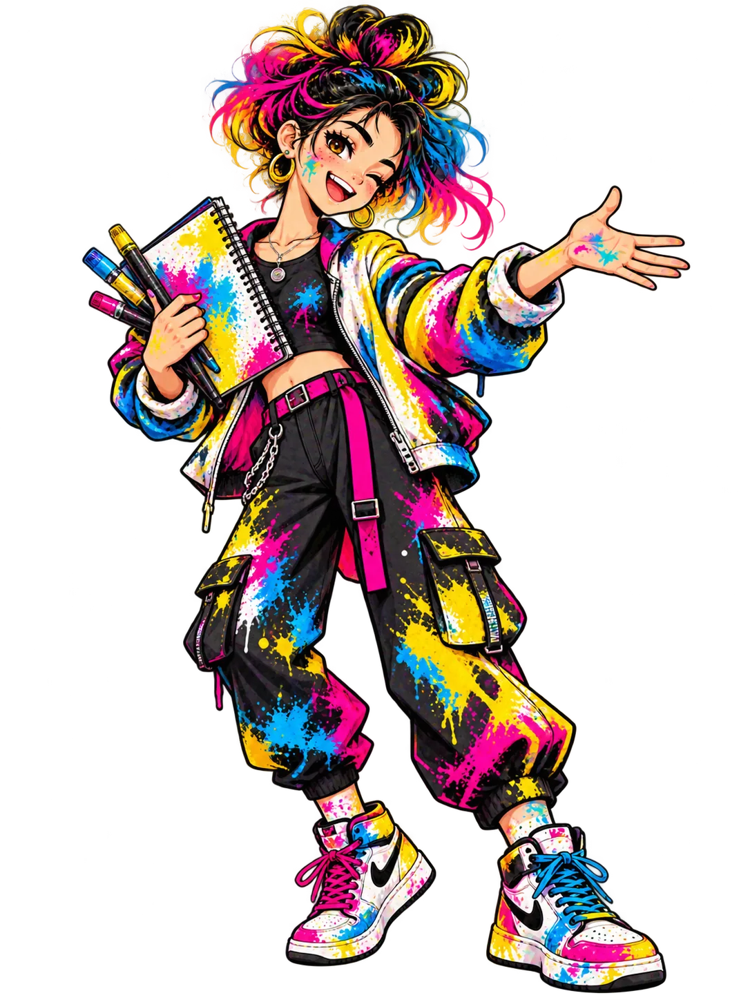

Une histoire en trois formes
Crée une composition qui évoque une émotion en choisissant des formes et une intention.

Trois univers, des défis créatifs, des œuvres à découvrir. À toi de jouer avec les arts plastiques !
Comment transformer trois formes simples en une image qui raconte une histoire ?
Couleur · Espace · Forme · Geste · Lumière · Matière · Outil · Support · Temps
Observe, choisis, expérimente. Les défis servent à explorer des démarches artistiques, pas à juger ton talent.
Crée une composition qui évoque une émotion en choisissant des formes et une intention.
Imagine comment détourner un objet quotidien pour en faire une œuvre. Justifie ton choix.
Choisis le lieu où présenter une œuvre et réfléchis à l'expérience du spectateur.
Explore une œuvre authentique, expérimente, produis une création personnelle et explique tes choix. Aucun modèle à recopier : ton intention compte.
Sélectionne une notion pour découvrir un geste de création.
Déplace les formes sur la toile. Change leurs couleurs, leur taille et leur superposition pour exprimer une intention artistique.
Dispose trois formes pour raconter une rencontre. Que change leur position ?
Déplace les éléments avec le doigt ou la souris. Les essais font partie de la création.
Découvre les gestes, les matériaux et les démarches des arts plastiques. Choisis une technique, relève un défi, puis explique tes choix.
Aucune technique validée pour le moment.
Observe, compare, enquête et collectionne. Les reproductions authentiques sont consultables depuis les liens vers les musées.
Chaque défi réussi enrichit ton musée. Les niveaux de cartes correspondent à des étapes du parcours, pas à la valeur des œuvres.
Choisis deux œuvres pour chercher ce qu'elles ont en commun et ce qui les distingue.
Retrouve les missions explorées et tes intentions artistiques enregistrées sur cet appareil.